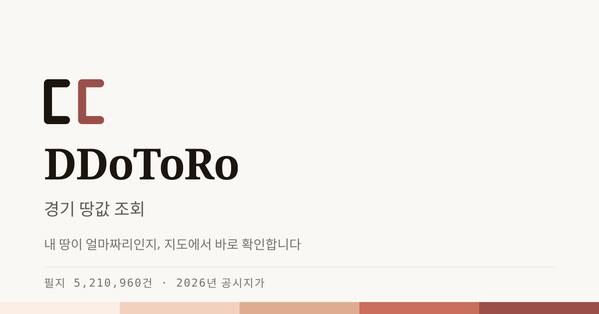

ㄸ · 먹 + 벽돌 · 라운드로 확정했다. 아래는 실제 파일을 그대로 불러온 것이라
여기서 제대로 보이면 배포해도 된다. 규칙은 assets/brand/README.md에 있다.
모두 assets/brand/ 안에 있다. 색은 hex로 굳혔다 — 파비콘·OG는 외부에서 렌더되므로 토큰을 참조할 수 없다.
mark.svg주 마크. 밝은 바탕 어디든
mark-solid.svg한 색만 되는 자리 — 1도 인쇄·자수·각인
mark-mono.svg흑백 문서·팩스
mark-reverse.svg먹·벽돌 바탕 위
favicon.svg브라우저 탭. 16px에서 획만으로는 힘이 빠져 바탕을 채웠다
app-icon.svg512×512. OS 마스크에 잘리지 않게 여백을 더 뒀다
mark-reverse.svg벽돌 바탕 위에서도 같은 파일을 쓴다

og-image.svgOG 원본. 그대로 배포하지 않는다
16px이 하한이다. 그 이하가 필요하면 바탕 있는 파비콘을 쓴다.
마크 + 이름은 이미지가 아니라 HTML로 조판한다. SVG에 텍스트를 넣으면 폰트가 없는 환경에서 깨진다. 아래가 헤더에 그대로 들어갈 형태다.
마크와 이름 사이 간격은 12px, 부제는 1px 세로선으로 나눈다. 이름은 Hahmlet 600.
Next.js App Router는 파일 이름만으로 자동 인식한다.
web/app/icon.svg | favicon.svg를 복사 |
web/app/apple-icon.png | app-icon.svg를 180×180 PNG로 변환 |
web/app/opengraph-image.tsx | og-image.svg를 원본 삼아 PNG 생성.
Hahmlet·IBM Plex Sans KR을 함께 로드해야 서체가 산다 |
web/public/brand/ | 나머지 마크 파일 |